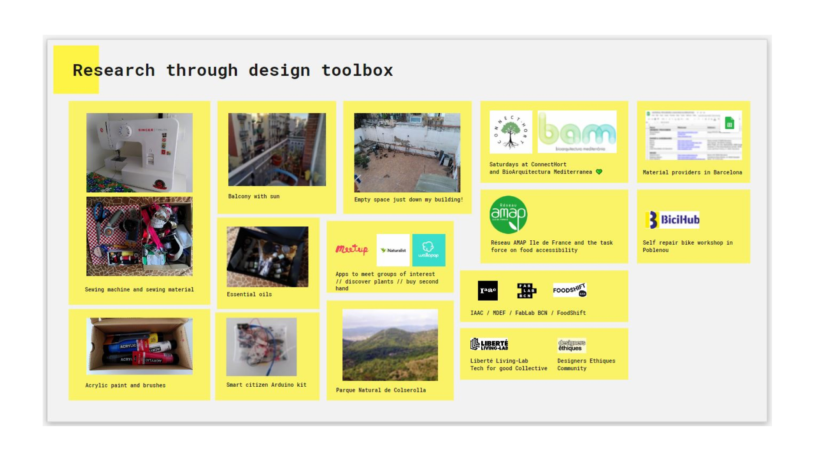
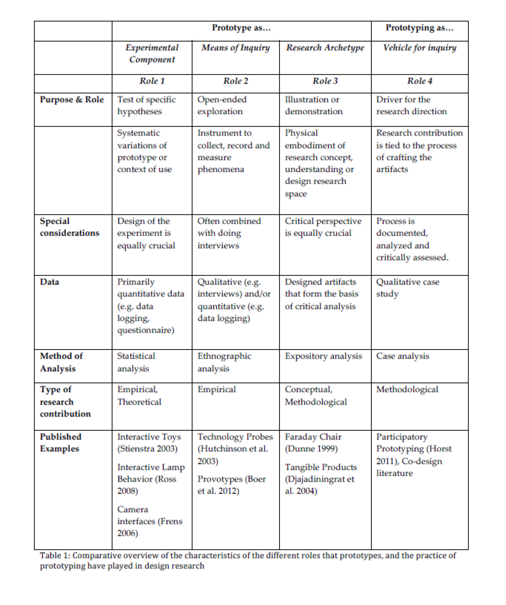
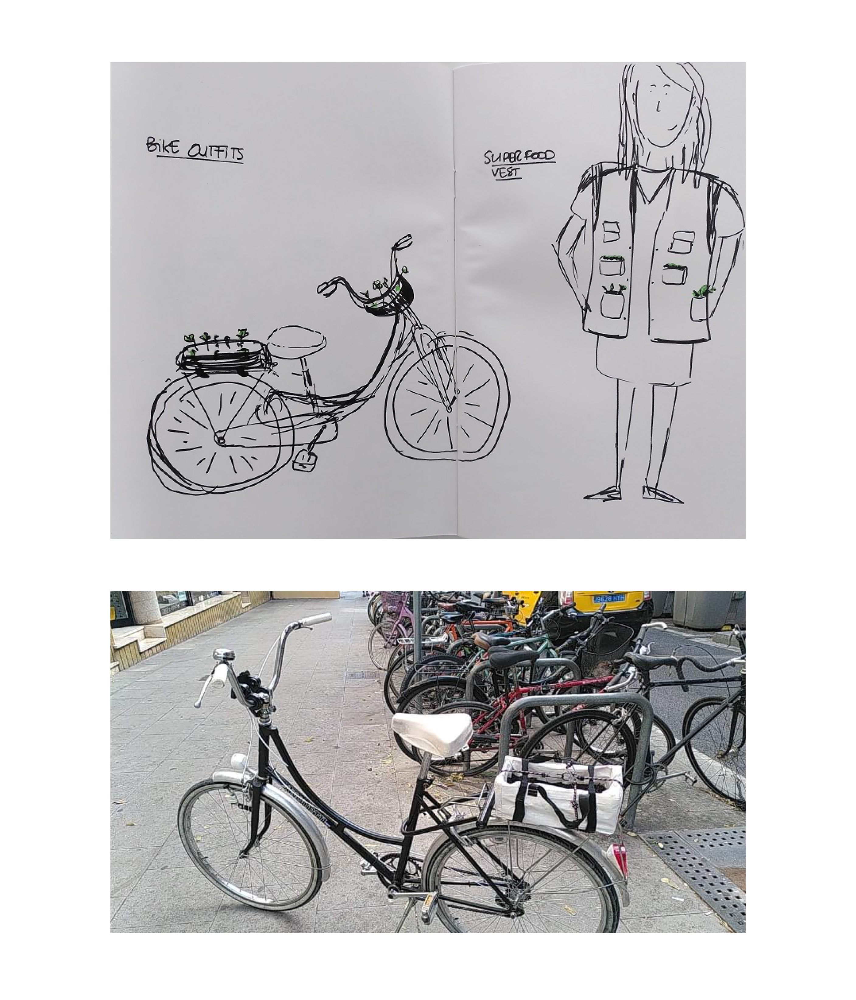

research through design toolbox
This week we discussed research through design and connected it to the concept of designing in a first person perspective (see ourselves as a tool to design).
We discussed the concept of "In Situ Resource Utilization" and the idea to take into account our local and connected concept to design
I reflected on my new design context in Barcelona and started here an inventory of the resources I can access in this new context. It includes material, persons, infrastructures accessible physically or virtually, here in Barcelona or back in France in relation to my previous job or personal projects.
This mapping will evolve as I keep adding resources as I explore my new surroundings, meet new people, learn in MDEF seminars...
roles of prototyping
We discussed about the different roles of prototyping in design :



I didn't know where to start for my prototype (or for the prototyping process). I remembered our Agro Zero class when Jonathan asked who in the class was a farmer and only 2 or 3 people identified themselves as farmers. How we could change the answer to that question?
I first thought I was gonna start growing food on my balcony as a first step, but I have already done that in previous places where I lived and I didn't feel it was gonna bring me new information. I am still going to do it but I wanted to find a different idea for this exploration of the roles of prototyping.
I wanted to explore role 3 and started to imagine a collection of unusual spaces to grow plants and make them visible in the city. I was first thinking of a vest that you could wear on top of your normal clothes with spaces to grow plants or carry seeds with you during your day. My bike is my main means of transportation in the city so I wanted to create an artifact to grow food on my bike and carry it around with me everywhere I go.
As part of my desired professional identity (cf week 1 reflections), I also was interested in developping storytelling skills so I would like to find different ways to document this prototyping journey. My first attempt will be using drawing and watercolor paint.
Direct link to the prototype board with the detail of all steps
Think about another prototype to explore relations to nature in the city and building new social ties involving the neighbours in my building.
Find ways to build prototypes to explore "Rural futures" weak signal and get out of my current "urban centric" context.